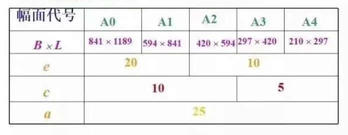
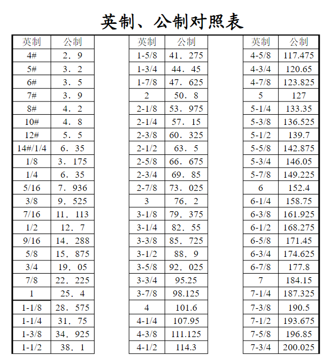
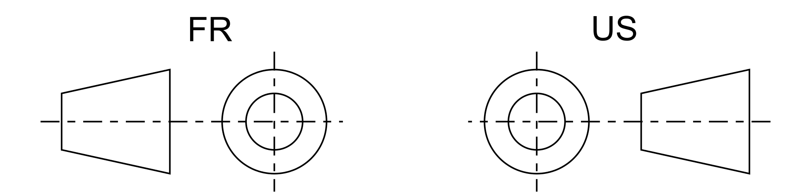
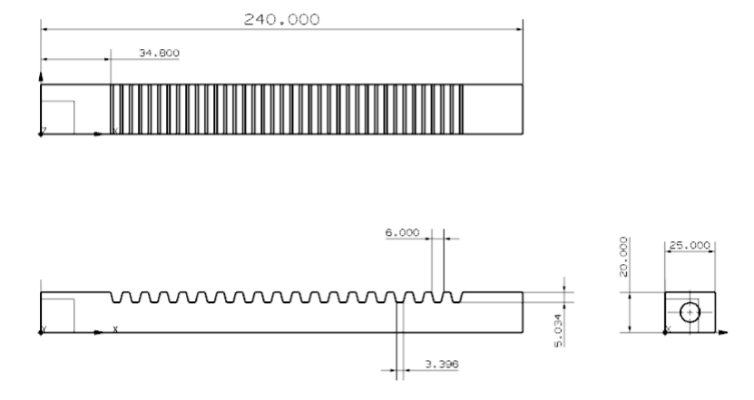
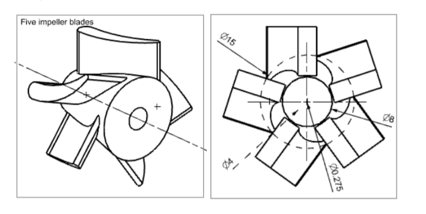

CHAPTER 4 – THREE DIMENSIONAL MODELING <<
Previous Next >> CHAPTER 6 - ASSEMBLY MODELING
CHAPTER 5 – DRAFTING
製圖 Author: 40723147
以描述物件的功能或結構的技術，是在世界範圍通用的「工程技術的語言」‧
工程製圖在工業和工程中對表達設計師的設想有著重要的作用。為了使圖紙便於溝通理解，人們採用了相似的符號、透視投影、單位、樣式和版面設計等。這些要素共同構成了一套視覺語言，使圖紙避免產生歧義，且相對容易理解。
1.圖紙選用:

為常見的圖紙大小規格表
2.單位選用:
分為英制公制單位供選擇

常用尺寸對照表
出自:(https://wenku.baidu.com/view/1468fa1ff90f76c660371aac.html)
3.角法選用:
常用的角法為第一角法和第三角法表示法如下

圖面範例


可以藉由NX12建立工程圖，在工程界中進行溝通完成製造及設計‧
完成建構實體-->工程圖繪製-->工程界的溝通方式
CHAPTER 4 – THREE DIMENSIONAL MODELING <<
Previous Next >> CHAPTER 6 - ASSEMBLY MODELING